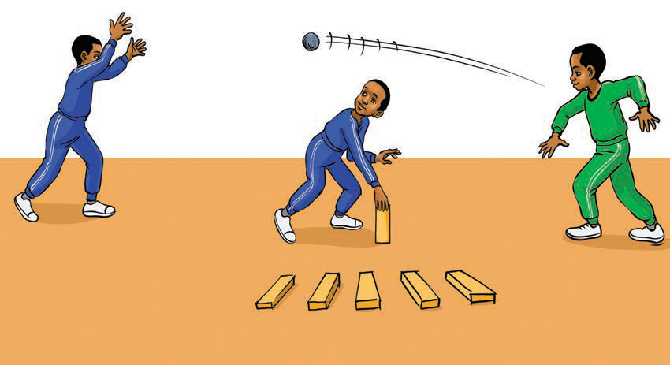

Mchezo wa rede
Rede ni mchezo wa mpira unaochezwa kwa mikono. Mchezo huu huchezwa na wavulana na wasichana. Mpira wa kuchezea rede unapaswa kuwa mwepesi. Vilevile, hautakiwi kuwa mkubwa sana. Kuna aina mbalimbali za mchezo wa rede zikiwemo:
- Rede ya kupanga vigae au vibao; na
- Rede ya kujaza mchanga kwenye chupa.
Rede ya kupanga vigae au vibao

Jinsi ya kucheza mchezo huu:
Namba za kirumi moja.
Kuwe na wachezaji watatu.
Wa kwanza upande kwa kulia.
Wa pili upande wa kushoto.
Wa tatu anatakiwa awe katikati ya wachezaji wawili pamoja na vigae au vibao;